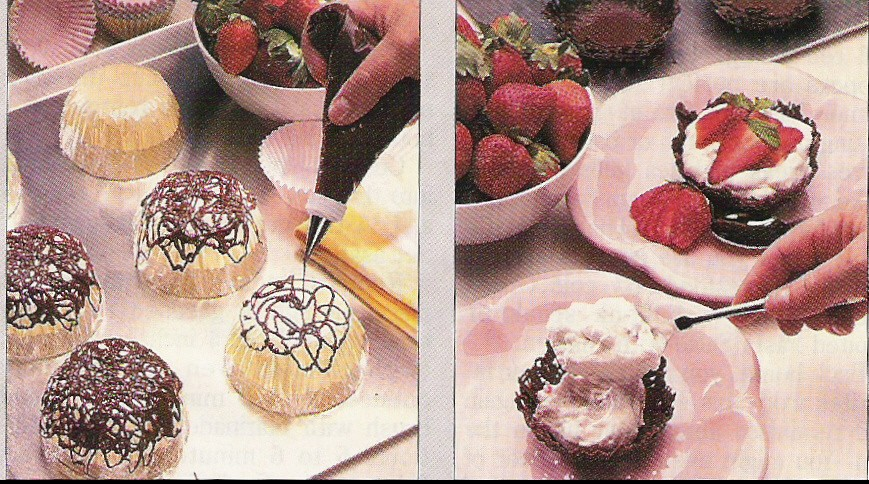

Chocolate Lace Cups

Directions
- Beat yolks, add flavorings and melted chocolate to yolks, stirring well. Beat egg whites and cream of tartar (high) till frothy, gradually add sugar till peaks form and sugar dissolves. Stir 1/4 meringue into chocolate mixture, then fold meringue into chocolate mixture. Beat cream to form whipped cream and fold into chocolate mixture. Fill lace cups and chill for at least 2 hours.
- To form lace cups melt 12 oz. pkg of semi sweet chocolate chips. Cool a little, pour into plastic bag and cut a pin hole in tip and proceed to form basket over paper cupcake cups covered with plastic wrap and a little butter spray, cool in refrigerator, fill with mouse and serve.
https://baron-3dl.github.io/normans-kitchen/recipe/chocolate-lace-cups.html